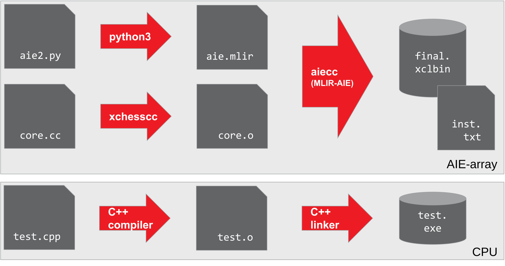
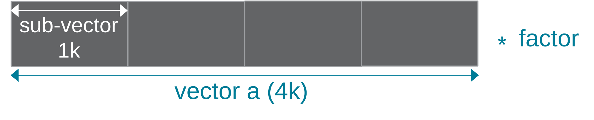
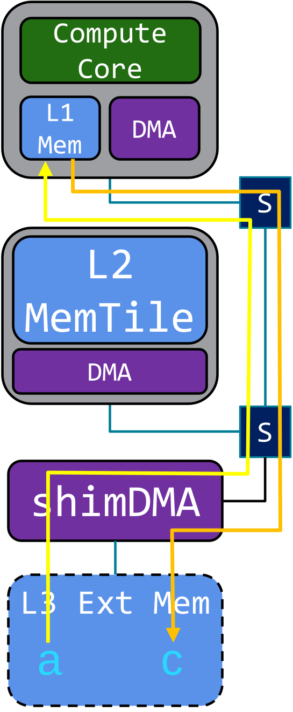
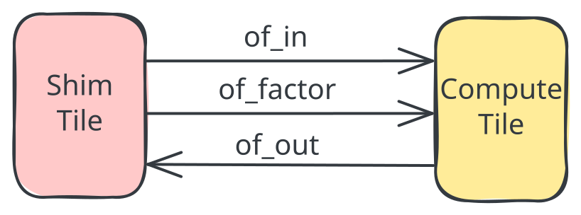

Section 3 - My First Program¶

This section creates the first program that will run on the AIE-array. As shown in the figure on the right, we will have to create both binaries for the AIE-array (device) and CPU (host) parts. For the AIE-array, a structural description and kernel code is compiled into the AIE-array binaries: an XCLBIN file ("final.xclbin") and an instruction sequence ("insts.bin"). The host code ("vectorScalar.exe") loads these AIE-array binaries and contains the test functionality.
For the AIE-array structural description we will combine what you learned in section-1 for defining a basic structural design in Python with the data movement part from section-2.
For the AIE kernel code, we will start with non-vectorized code that will run on the scalar processor part of an AIE. Section-4 will introduce how to vectorize a compute kernel to harvest the compute density of the AIE.
The host code can be written in either C++ (as shown in the figure) or in Python. We will also introduce some convenience utility libraries for typical test functionality and to simplify context and buffer creation when the Xilinx RunTime (XRT) is used, for instance in the AMD XDNA Driver for Ryzen™ AI devices.

Throughout this section, a vector scalar multiplication (c = a * factor) will be used as an example. Vector scalar multiplication takes an input vector a and computes the output vector c by multiplying each element of a with a factor. In this example, the total vector size is set to 4096 (32b) that will processed in chunks of 1024.
This design is also available in the programming_examples of this repository.
The Compact Form: @iron.jit¶
The shortest path to running this design on the NPU is the @iron.jit form in vector_scalar_mul.py. The IRON structural description is wrapped in a single decorated function; the first time you call it, IRON JIT-compiles the design (including the external C++ kernel referenced by ExternalFunction(source_file=...)) and runs it on the attached NPU.
@iron.jit
def vector_scalar_mul(a_in: In, f_in: In, c_out: Out):
scale_fn = ExternalFunction(
"vector_scalar_mul_aie_scalar",
source_file=str(_KERNEL_SRC),
arg_types=[tile_ty, tile_ty, scalar_ty, np.int32],
)
of_in = ObjectFifo(tile_ty, name="in")
of_factor = ObjectFifo(scalar_ty, name="infactor")
of_out = ObjectFifo(tile_ty, name="out")
def core_fn(of_in, of_factor, of_out, scale):
elem_factor = of_factor.acquire(1)
for _ in range_(tensor_size // tile_size):
elem_in = of_in.acquire(1)
elem_out = of_out.acquire(1)
scale(elem_in, elem_out, elem_factor, tile_size)
of_in.release(1)
of_out.release(1)
of_factor.release(1)
my_worker = Worker(
core_fn, [of_in.cons(), of_factor.cons(), of_out.prod(), scale_fn]
)
rt = Runtime()
with rt.sequence(tensor_ty, scalar_ty, tensor_ty) as (a, f, c):
rt.start(my_worker)
rt.fill(of_in.prod(), a)
rt.fill(of_factor.prod(), f)
rt.drain(of_out.cons(), c, wait=True)
return Program(iron.get_current_device(), rt).resolve_program()
The host side is just three tensors and one call:
a_in = iron.arange(1, tensor_size + 1, dtype=np.int32, device="npu")
f_in = iron.tensor([3], dtype=np.int32, device="npu")
c_out = iron.zeros(tensor_size, dtype=np.int32, device="npu")
vector_scalar_mul(a_in, f_in, c_out)
To run it end-to-end (JIT-compile + execute + verify):
To inspect the lowered MLIR without touching the NPU:
The rest of this section walks down through what @iron.jit is doing for you — the AIE-array structural description, the external kernel, and the explicit-XRT host code (both C++ and Python). The same vector_scalar_mul.py is also used as the design source for the explicit walkthrough: make produces the xclbin + insts pair via --xclbin-path/--insts-path, then make run_cpp and make run_py drive those artifacts through the standalone host harnesses below.
What @iron.jit Does For You¶
The @iron.jit-decorated function builds a complete IRON Program (see section-1) and then hands the resulting MLIR to the AIE compiler. The next subsections look at each piece in turn — the AIE-array structural description (the body of the decorated function), the external kernel (the .cc source the ExternalFunction(source_file=...) factory points at), and the host code that loads + runs the compiled artifacts (XCLBIN + insts.bin, or XCLBIN + xrt::elf) when you don't go through the @iron.jit call.
AIE-array Structural Description¶

The structural description (see section-1) inside vector_scalar_mul() deploys both a compute core (green) for the multiplication and a shimDMA (purple) for data movement of both input vector a and output vector c residing in external memory.
The compute core runs an external function: a kernel written in C++ and linked into the design via ExternalFunction(source_file=...). To get our initial design running on the AIE-array, we use a generic version of the vector scalar multiply that runs on the scalar processor of the AIE. This local version uses int32_t instead of the default int16_t from the programming_examples version.
tensor_size = 4096
tile_size = 1024
# Define tensor types
tensor_ty = np.ndarray[(tensor_size,), np.dtype[np.int32]]
tile_ty = np.ndarray[(tile_size,), np.dtype[np.int32]]
scalar_ty = np.ndarray[(1,), np.dtype[np.int32]]
# External C++ kernel — auto-built into the JIT cache from the .cc source.
scale_fn = ExternalFunction(
"vector_scalar_mul_aie_scalar",
source_file=str(_KERNEL_SRC), # vector_scalar_mul.cc next to this file
arg_types=[tile_ty, tile_ty, scalar_ty, np.int32],
)
Since the compute core can only access L1 memory, input data needs to be explicitly moved to (yellow arrow) and from (orange arrow) the L1 memory of the AIE. We will use the ObjectFifo data movement primitive (introduced in section-2).

This enables looking at the data movement in the AIE-array from a logical view where we deploy 3 ObjectFifos: of_in to bring in the vector a, of_factor to bring in the scalar factor, and of_out to move the output vector c, all using shimDMA. Note that the objects for of_in and of_out are declared to have the tile_ty type: 1024 int32 elements, while the factor is an object containing a single integer. All ObjectFifos are set up using a depth size of 2 to enable the concurrent execution to the Shim Tile and Compute Tile DMAs with the processing on the compute core.
# Input data movement
of_in = ObjectFifo(tile_ty, name="in")
of_factor = ObjectFifo(scalar_ty, name="infactor")
# Output data movement
of_out = ObjectFifo(tile_ty, name="out")
fill() and drain() runtime functions have the ObjectFifoHandle argument match either a producer handle (for of_in and of_factor) or a consumer handle (for of_out).
Note that for transfers into the AIE-array that we want to explicitly wait on, we must specify wait=True.
# Runtime operations to move data to/from the AIE-array
rt = Runtime()
with rt.sequence(tensor_ty, scalar_ty, tensor_ty) as (a_in, f_in, c_out):
rt.start(my_worker)
rt.fill(of_in.prod(), a_in)
rt.fill(of_factor.prod(), f_in)
rt.drain(of_out.cons(), c_out, wait=True)
Finally, we need to configure how the compute core accesses the data moved to its L1 memory, in ObjectFifo terminology: we need to program the acquire and release patterns of of_in, of_factor and of_out. Only a single factor is needed for the complete 4096 vector, while for every processing iteration on a sub-vector, we need to acquire an object of 1024 integers to read from of_in and one similar sized object from of_out. Then we call our previously declared external function with the acquired objects as operands. After the vector scalar operation, we need to release both objects to their respective of_in and of_out ObjectFifos. Finally, after the 4 sub-vector iterations, we release the of_factor ObjectFifo.
This access and execute pattern runs on the AIE compute core and calls the external function defined in vector_scalar_mul.cc, which @iron.jit auto-builds via ExternalFunction. We run this pattern in a very large loop to enable enqueuing multiple rounds of vector scalar multiply work from the host code.
# Task for the core to perform
def core_fn(of_in, of_factor, of_out, scale):
elem_factor = of_factor.acquire(1)
for _ in range_(tensor_size // tile_size):
elem_in = of_in.acquire(1)
elem_out = of_out.acquire(1)
scale(elem_in, elem_out, elem_factor, tile_size)
of_in.release(1)
of_out.release(1)
of_factor.release(1)
# Create a worker to perform the task
my_worker = Worker(core_fn, [of_in.cons(), of_factor.cons(), of_out.prod(), scale_fn])
Kernel Code¶
We can program the AIE compute core using C++ code and compile it with the selected single-core AIE compiler into a kernel object file. For our vector scalar multiply, we use a generic implementation in vector_scalar_mul.cc that can run on the scalar processor part of the AIE. The vector_scalar_mul_aie_scalar function processes one data element at a time, taking advantage of AIE scalar datapath to load, multiply and store data elements.
void vector_scalar_mul_aie_scalar(int32_t *a, int32_t *c,
int32_t *factor, int32_t N) {
for (int i = 0; i < N; i++) {
c[i] = *factor * a[i];
}
}
Section-4 will introduce how to exploit the compute dense vector processor.
Note that since the scalar factor is communicated through an object, it is provided as an array of size one to the C++ kernel code and hence needs to be dereferenced.
Host Code¶
When you don't call vector_scalar_mul() directly (the @iron.jit path), the host code takes over: it loads the compiled artifacts, configures the AIE module, provides input data, and kicks off execution. After running, it verifies the results and optionally outputs trace data (covered in section-4b). Both C++ test.cpp and Python test.py variants are available — they consume the xclbin + insts pair produced by the compile-only path (make runs vector_scalar_mul.py --xclbin-path ... --insts-path ...).
There are two compiled-artifact shapes the host code can load:
- XCLBIN +
insts.bin— the classic path; the host opens the xclbin viaxrt::xclbinand reads instructions out ofinsts.binseparately. Driven by@iron.jit(..., --xclbin-path ... --insts-path ...). This is what the examples in this section use. - XCLBIN +
xrt::elf— a newer load path where instructions are wrapped into an ELF viaaiebu-asmand loaded throughxrt::elf+xrt::module. Opt in via@iron.jit(elf_path=...)(see compilation_stages.md §Setting → stage cheat-sheet);programming_examples/ml/eltwise_unaryis the canonical demo.
Either path uses the same XCLBIN — they differ only in how the host loads instructions.
For convenience, a set of test utilities support common elements of command line parsing, the XRT-based environment setup and testbench functionality: test_utils.h or test.py.
The host code contains the following sections (with C/C++ code examples):
-
Parse program arguments and set up constants: the host code typically requires the following 3 arguments:
-xthe XCLBIN file-kkernel name (with default name "MLIR_AIE")-ithe instruction sequence file as arguments
This is because it is its task to load those files and set the kernel name. Both the XCLBIN and instruction sequence are generated when compiling the AIE-array structural description and kernel code with
aiecc.// Program arguments parsing po::options_description desc("Allowed options"); po::variables_map vm; test_utils::add_default_options(desc); test_utils::parse_options(argc, argv, desc, vm); int verbosity = vm["verbosity"].as<int>(); // Declaring design constants constexpr bool VERIFY = true; constexpr int IN_SIZE = 4096; constexpr int OUT_SIZE = IN_SIZE; -
Read instruction sequence: load the instruction sequence from the specified file in memory
-
Create XRT environment: so that we can use the XRT runtime
-
Create XRT buffer objects for the instruction sequence, inputs (vector
aandfactor) and output (vectorc).XRT currently supports the mapping of up to 5 inout buffers to the kernel. The AIE array does not have a limit to how many inout buffers its data movers can map to but for the sake of simplicity, XRT limits this to 5. If more than 5 is needed, we can map multiple data movers to the same inout buffer with an offset for each data mover. Most of the examples only use 2 inout buffers (1 input, 1 output) or 3 inout buffers (2 inputs, 1 output). Later on, when we introduce tracing, we will use another inout buffer dedicated to trace data.
Note that the
kernel.group_id(<number>)needs to match the order ofdef sequence(A, F, C):in the data movement to/from the AIE-array of python AIE-array structural description, starting with ID number 3 for the first sequence argument and then incrementing by 1. So the 1 input, 1 output pattern maps to group_id=3,4 while the 2 input, 1 output pattern maps to group_id=3,4,5 as shown below.// set up the buffer objects auto bo_instr = xrt::bo(device, instr_v.size() * sizeof(int), XCL_BO_FLAGS_CACHEABLE, kernel.group_id(1)); auto bo_inA = xrt::bo(device, IN_SIZE * sizeof(DATATYPE), XRT_BO_FLAGS_HOST_ONLY, kernel.group_id(3)); auto bo_inFactor = xrt::bo(device, 1 * sizeof(DATATYPE), XRT_BO_FLAGS_HOST_ONLY, kernel.group_id(4)); auto bo_outC = xrt::bo(device, OUT_SIZE * sizeof(DATATYPE), XRT_BO_FLAGS_HOST_ONLY, kernel.group_id(5)); -
Initialize and synchronize: host to device XRT buffer objects.
Here, we initialize the values of our host buffer objects (including output) and call
syncto synchronize that data to the device buffer object accessed by the kernel.1. Run on AIE and synchronize: Execute the kernel, wait to finish, and synchronize device to host XRT buffer objects// Copy instruction stream to xrt buffer object void *bufInstr = bo_instr.map<void *>(); memcpy(bufInstr, instr_v.data(), instr_v.size() * sizeof(int)); // Initialize buffer bo_inA DATATYPE *bufInA = bo_inA.map<DATATYPE *>(); for (int i = 0; i < IN_SIZE; i++) bufInA[i] = i + 1; // Initialize buffer bo_inFactor DATATYPE *bufInFactor = bo_inFactor.map<DATATYPE *>(); *bufInFactor = scaleFactor; // Zero out buffer bo_outC DATATYPE *bufOut = bo_outC.map<DATATYPE *>(); memset(bufOut, 0, OUT_SIZE * sizeof(DATATYPE)); // sync host to device memories bo_instr.sync(XCL_BO_SYNC_BO_TO_DEVICE); bo_inA.sync(XCL_BO_SYNC_BO_TO_DEVICE); bo_inFactor.sync(XCL_BO_SYNC_BO_TO_DEVICE); bo_outC.sync(XCL_BO_SYNC_BO_TO_DEVICE); -
Run testbench checks: Compare device results to reference and report test status
// Compare out to golden int errors = 0; if (verbosity >= 1) { std::cout << "Verifying results ..." << std::endl; } for (uint32_t i = 0; i < IN_SIZE; i++) { int32_t ref = bufInA[i] * scaleFactor; int32_t test = bufOut[i]; if (test != ref) { if (verbosity >= 1) std::cout << "Error in output " << test << " != " << ref << std::endl; errors++; } else { if (verbosity >= 1) std::cout << "Correct output " << test << " == " << ref << std::endl; } }
Python Host code (test.py)¶
The same configuration steps in the C++ host code is also required for the python version. However, the python version is able to leverage python classes built into IRON which simplifies the is designed to abstract away the lower level parameters.
-
Parse program arguments: Functions the same way as the C++ via the python argument parser. The shared
add_runtime_argshelper lives in aie.utils.hostruntime.argparse and adds the standard--xclbin/--instr/--kerneloptions. -
Read instruction sequence + Create XRT environment: These are all part of
NPUKernelclass under aie.utils.npukernel. Passing in the file name of the XCLBIN file and instruction sequence file initializes the kernel object. The runtime is then loaded with this kernel object. -
Create XRT buffer objects: This step is simplified with the IRON python classes where IRON tensors can be created from numpy data arrays and a datatype. These objects interacts with the NPU runtime so that the objects are properly initalized and synced.
-
Run on AIE and synchronize: Execute the program, waits for it to finish, synchronizes the data buffers and returns the runtime in milliseconds.
python npu_time = aie.utils.DefaultNPURuntime.run(kernel_handle, [in_buffer, in_factor, out]) -
Run testbench checks: Compare device results to reference.
python e = np.equal(out, ref_buffer) errors = errors + np.size(e) - np.count_nonzero(e)
Running the Program¶
@iron.jit end-to-end run:
make run # JIT-compile + run vector_scalar_mul.py on the attached NPU
make emit-mlir # print the lowered MLIR to build/aie.mlir without touching the NPU
Explicit-XRT walkthrough — build the xclbin + insts pair via vector_scalar_mul.py --xclbin-path ... --insts-path ..., then drive them through the standalone C++ or Python host:
make # build/final.xclbin + build/insts.bin + vectorScalar.exe
make run_cpp # run the C++ host harness (test.cpp) against the artifacts
make run_py # run the Python host harness (test.py) against the artifacts
Host code templates and design practices¶
Because our design is defined in several different files such as:
* top level design - vector_scalar_mul.py
* kernel source - vector_scalar_mul.cc
* host code - test.cpp / test.py (only used in the decomposed walkthrough; @iron.jit does this for you)
ensuring that top level design parameters stay consistent is important so we don't, for example, get system hangs when buffer sizes in the host code don't match the buffer size in the top level design. The @iron.jit path handles this automatically — the same design function defines the shapes used to allocate iron.tensor inputs and the runtime sequence. For the explicit-XRT walkthrough, section-4b shares example design templates that put these top level parameters in the Makefile and pass them to the other design files; the same pattern is visible in example designs like vector_scalar_mul.